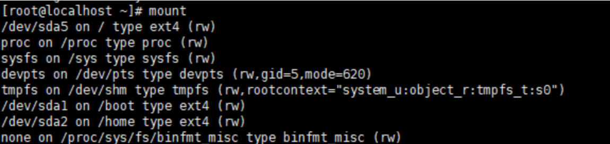
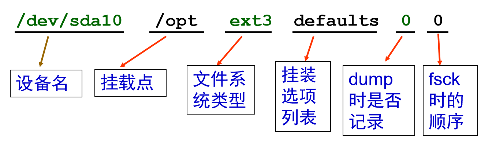
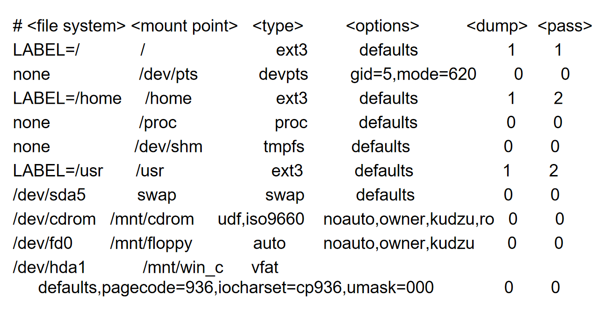

Linux文件系统管理
Linux文件系统概述
Linux下的所有文件和目录以一个树状的结构组织构成了 Linux 中的文件系统。
- Linux文件系统标准（Linux File System Standard，FSSTND）
- 文件系统层次结构标准（File System Hierarchy Standard，FHS）
Linux常见的文件目录含义为：
系统启动必须：
/boot：存放的启动Linux 时使用的内核文件，包括连接文件以及镜像文件。
/etc：存放所有的系统需要的配置文件和子目录列表，更改目录下的文件可能会导致系统不能启动。
/lib：存放基本代码库（比如c++库），其作用类似于Windows里的DLL文件。几乎所有的应用程序都需要用到这些共享库。
/sys： 这是linux2.6内核的一个很大的变化。该目录下安装了2.6内核中新出现的一个文件系统 sysfs 。sysfs文件系统集成了下面3种文件系统的信息：针对进程信息的proc文件系统、针对设备的devfs文件系统以及针对伪终端的devpts文件系统。该文件系统是内核设备树的一个直观反映。当一个内核对象被创建的时候，对应的文件和目录也在内核对象子系统中
指令集合：
/bin：存放着最常用的程序和指令
/sbin：只有系统管理员能使用的程序和指令。
外部文件管理：
/dev ：Device(设备)的缩写, 存放的是Linux的外部设备。注意：在Linux中访问设备和访问文件的方式是相同的。
/media：类windows的其他设备，例如U盘、光驱等等，识别后linux会把设备放到这个目录下。
/mnt：临时挂载别的文件系统的，我们可以将光驱挂载在/mnt/上，然后进入该目录就可以查看光驱里的内容了。
临时文件：
/run：是一个临时文件系统，存储系统启动以来的信息。当系统重启时，这个目录下的文件应该被删掉或清除。如果你的系统上有 /var/run 目录，应该让它指向 run。
/lost+found：一般情况下为空的，系统非法关机后，这里就存放一些文件。
/tmp：这个目录是用来存放一些临时文件的。
账户：
- /root：系统管理员的用户主目录。
- /home：用户的主目录，以用户的账号命名的。类似于windows下的users目录。
- /usr：用户的很多应用程序和文件都放在这个目录下，类似于windows下的program files目录。
- /usr/bin：系统用户使用的应用程序与指令。
- /usr/sbin：超级用户使用的比较高级的管理程序和系统守护程序。
- /usr/src：内核源代码默认的放置目录。
（ /bin和/usr/bin目录的区别：
1）/bin,/sbin目录是在系统启动后挂载到根文件系统中的，所以/sbin,/bin目录必须和根文件系统在同一分区；
2） /usr/bin,usr/sbin可以和根文件系统不在一个分区。）
运行过程中要用：
/var：存放经常修改的数据，比如程序运行的日志文件（/var/log 目录下）。（variable）
/proc：管理内存空间！虚拟的目录，是系统内存的映射，我们可以直接访问这个目录来，获取系统信息。这个目录的内容不在硬盘上而是在内存里，我们也可以直接修改里面的某些文件来做修改。（process，进程）
扩展用的：
/opt：默认是空的，我们安装额外软件可以放在这个里面。
/srv：存放服务启动后需要提取的数据（不用服务器就是空）
Linux支持的文件系统
Linux的内核采用了称之为虚拟文件系统（Virtual File System，VFS）的技术，因此 Linux 可以支持多种不同的文件系统类型。（类似于虚拟设备）
Linux可支持的文件系统有：
- Linux目前几乎支持所有的UNIX类的文件系统，如 HFS、XFS、JFS、Minix FS 及 UFS 等
- Linux 支持 NFS 文件系统
- Linux 也支持 NTFS 和 vfat（FAT32）（Windows下常用）
日志文件系统
日志文件系统（journaling file system）是一个具有故障恢复能力的文件系统，在这个文件系统中，因为对目录以及位图的更新信息总是在原始的磁盘日志被更新之前写到磁盘上的一个连续的日志上，所以它保证了数据的完整性。当发生系统错误时，一个全日志文件系统将会保证磁盘上的数据恢复到发生系统崩溃前的状态。同时，它还将覆盖未保存的数据，并将其存在如果计算机没有崩溃的话这些数据可能已经遗失的位置，这是对关键业务应用来说的一个很重要的特性。
如果不使用日志文件系统，那么一旦系统崩溃，可能导致整个磁盘卷的损坏。
日志文件系统的优点 ：
- 提高了文件的存储安全性
- 降低了文件被破坏的机率
- 缩短了对磁盘的扫描时间
- 减少了磁盘整体扫描次数
Linux支持以下的日志文件系统：
- ext3/ext4
- JFS（IBM）
- XFS（ SGI ）
- Reiserfs
Linux下常见的文件系统
- Linux使用的标准文件系统：
- ext2/ext3/ext4
- 交换文件系统：
- swap
- Windows文件系统：
- FAT32/vfat
- 网络文件系统：
- NFS
- 标准光盘文件系统：
- iso9660
使用Linux文件系统的一般方法
- 在硬盘上创建分区或逻辑卷：
- 可以使用fdisk命令创建分区。
- 可以使用LVM（logical volume manager）的相关命令创建逻辑卷
- 在分区/LV上建立文件系统：
- 类似于在Windows下进行格式化操作。
- 挂装文件系统到系统中：
- 手工挂装：使用mount命令
- 启动时自动挂装：编辑“/etc/fstab” 添加相应的配置行。
- 卸装文件系统：
- 对于可移动介质（如u盘、光盘）上的文件系统，当使用完毕可以使用umount命令实施卸装操作。
挂装和卸装文件系统
什么是挂装（挂载，mount）：
Unix操作系统只有一个单一的目录树结构，该目录树的最顶层就是
/， 所有可访问文件都必须与这个目录树结构关联。这一点和Windows操作系统不同，在Windows中，每一个硬盘都有独立的目录树结构，比如D:\workspace\algorithm，C:\Users这样的。挂载（mount）这一动作就是把某个设备与目录树中的某个特定位置进行关联，以便于操作系统能够从根目录开始找到这个刚刚加入的设备，从而访问该设备的内的文件数据。（需要注意的是，这里的设备是泛指，既可以指usb、CD-ROM这样真实的设备，也可以是操作系统中的某个目录）。比如，当系统启动的时候，一个特殊的存储设备（通常被称为root 分区）就会与目录树的根进行关联，换句话说，把root分区挂载到了
/上。再比如说，现在你想访问存储在U盘上的数据，操作系统究竟发生了什么呢？根据前面说的，为了使操作系统找到它，我们必须把usb挂载到目录树结构的某个位置下（比如说，
/media/usb/），假设usb设备是/dev/usb，那么在把usb插入电脑的时候，对应执行的命令就是：mount /dev/usb /media/usb经过这行命令，usb中的文件就对操作系统可见了，比如在usb中的某个文件位于/dir/hello.txt，那么操作系统可访问的对应路径就是/media/usb/dir/hello.txt。当拔出usb时，就执行
umount /dev/usb或umount /media/usb（两者都可行）Mounting applies to anything that is made accessible as files, not just actual storage devices. 比如Linux系统有一个特殊的文件系统（被称为 proc filesystem）被挂载在
/proc目录下，该文件系统就没有真实的存储设备：/proc目录下存放的文件保存着正在运行的进程的一些信息。（关于 proc 可以看之前写的那篇文章
任何可以以文件形式访问的设备的文件系统，都可以被挂载到Linux的文件层次结构（目录树）中，以方便从根目录开始对其进行访问。这里的设备包括但不限于可移动设备、硬盘、甚至内存镜像。
挂载的本质就是针对某一设备, 分析出其文件系统结构, 并根据其文件系统类型调用 linux 中相应的驱动, 处理其元数据, 将这些信息附加到 linux 的目录树上呈现出来。
挂载点就是挂载的目录。
实际上，Linux系统除了根目录以外的所有文件目录，都是系统启动后挂载进目录树的。比如最先被挂载的是内核文件目录 \boot。

挂装文件系统
挂装文件系统通常使用mount命令，其格式为：
mount [选项] [<分区设备名>] [<挂装点>]
常用选项：
- -t <文件系统类型>：指定文件系统类型
- -r ：使用只读方式来挂载
- -a：挂装/etc/fstab文件中记录的设备
- -o iocharset=cp936/utf8：使挂装的设备可以显示中文文件名
- -o loop：使用回送设备挂装ISO文件和映像文件
$ mount
$ mount -l
$ mount --guess /dev/sda3
# mount –t ext3 /dev/sdb1 /opt
# mount –t vfat /dev/hda6 /mnt/win
# mount –t vfat –o iocharset=cp936 \
/dev/hda8 /mnt/win2卸装文件系统
卸装文件系统通常使用umount命令，格式为：
umount < 分区设备名或挂装点>
# umount /dev/hda6
# umount /dev/sdb1
# umount /opt注意事项
- 挂装点目录必须存在
- 应该在挂装目录的上级目录下进行挂装操作
- 不该在同一个挂装点目录下挂装两个文件系统
- 当文件系统处于“busy”状态时不能进行卸装
- 文件系统何时处于“busy”状态
- 文件系统上面有打开的文件
- 某个进程的工作目录在此文件系统上
- 文件系统上面的缓存文件正在被使用
- 文件系统何时处于“busy”状态
可移动介质
挂装和卸装除了用于自己电脑上的硬盘分区，还可以用于Linux系统访问各种可移动介质——光盘、DVD、软盘、USB等等。
可移动介质的挂载点通常在 /media 下。
CD和DVD
CD和DVD可移动设备可以在Gnome/KDE（Unix桌面环境）中自动挂载 。也可以使用命令行手工挂载：
- CD/DVD（只读）
- mount /media/cdrom
- CD/DVD（刻录）
- mount /media/cdrecorder
- 卸载
- umount /media/cdrom
- umount /media/cdrecorder
- eject —— 卸载并弹出光盘
USB存储设备
- 被内核探测为SCSI设备
- /dev/sdaX、/dev/sdbX、或类似的设备文件
- 在Gnome/KDE中自动挂载
- 在[计算机]窗口中创建图标
- 挂载在/media/<设备ID>下
- <设备ID>被厂商内建在设备中
- 命令行下手动挂载/卸载
- mount -t vfat /dev/sda1 /mnt/usb1
- umount /mnt/usb1
软盘
- 必须被手工挂载和卸载
- mount /media/floppy
- umount /media/floppy
- DOS软盘可以使用mtools工具
- 透明地挂载和卸载设备
- 使用DOS命名规则
- mdir a:
- mcopy /home/file.txt a:
直接挂装使用映像文件
- 用mount命令加-o loop选项挂装光盘镜像文件
- mount -o loop <ISO文件名> <挂装点>
- 例如：
- mount -o loop CentOS-5.5-i386-bin-DVD.iso /mnt/iso
- 卸装ISO文件
- umount /mnt/iso
IMG文件同理。
系统启动挂装表
如果每次开机都手动挂载设备，那么显然会非常麻烦。我们可以使用系统启动挂载表，让系统开机时自动对需要挂载的设备进行挂载。
系统启动挂装表的目录在：/etc/fstab
fstab (file system table，文件系统表) 是一个纯文本文件，开机后，系统会自动搜索该文件中的内容，对列于该文件中的文件系统进行自动挂载。也可以使用 mount -a 命令手动挂载该文件中的所有设备，这样更新后重新挂载不需要重启。
- 系统重启时保留文件系统体系结构
- 配置文件系统体系结构
- 被 mount、fsck 和其它程序使用
- 使用 mount -a 命令挂载 /etc/fstab 中的所有文件系统
- 可以在设备栏使用文件系统卷标
/etc/fstab的每一行说明一个文件系统的挂载信息，每一行由 6 列信息组成，列与列之间用 TAB 键隔开。
- fs_spec：设备或远程文件系统
- fs_file：挂装点目录
- fs_type：文件系统类型
- fs_options：文件系统挂载选项
- fs_dump：被”dump”命令使用来检查一个文件系统应该以多快频率进行转储，若不需要转储则该字段为“0”
- fs_pass：被”fsck”命令用来决定在启动时需要被扫描的文件系统的顺序，若无需在启动时扫描则该字段为“0”

一个fstab的实例如下图所示：

挂装选项有：
| 选项 | 说明 |
|---|---|
| defaults | 使用 rw, suid, dev, exec, auto, nouser 和 async 挂装设备 |
| acl/noacl | 支持/不支持 POSIX Access Control Lists （ACL） |
| async | 以非同步方式（延迟写）执行文件系统的输入输出操作 |
| atime/noatime | 每次访问文件时都 更新/不更新 文件的访问时间，atime 为默认值，noatime 会提高文件系统的访问速度 |
| auto/noauto | 使用 mount -a 或开机时 会/不会自动挂装 |
| dev/nodev | 可以/不可 解读文件系统上的字符或区块设备 |
| exec/noexec | 可以/不可 执行文件系统上的二进制文件 |
| suid/nosuid | 开启/禁用 SUID和SGID设置位 |
| user/nouser | 允许普通用户/仅超级用户 挂装这个文件系统 |
| users | 使一般用户可以挂装/卸载,用于桌面环境，包含 noexec、nosuid、nodev 选项 |
| rw/ro | 以 读写/只读 方式挂装文件系统。 |
| remount | 重新挂装已挂装的文件系统（通常用于mount命令行） |
交换空间
Linux系统使用交换分区/文件实现虚拟内存技术，它是系统RAM的补充。能够实现内存扩容。
基本设置有：
- 创建交换分区或者文件
- 使用 mkswap 创建交换文件系统
- 在 /etc/fstab 文件中添加适当的条目
- 使用 swapon -a 激活交换空间
生成交换文件可以使用dd命令：
dd if=/dev/zero of=/swapfile bs=1024 count=X
dd命令
从标准输入、文件或设备读取数据，依照指定的格式来转换数据， 再输出至文件、设备或标准输出。
常用选项：
- if=file：输入文件名或设备名，缺省标准输入
- of=file：输出文件名或设备名，缺省标准输出
- bs=n：同时设置输入输出块的大小为n
- count=n：仅仅读取指定的n块数据
将软盘的内容制作成映像文件备份到硬盘
# dd if=/dev/fd0 of=fdtemp.img
将硬盘上的软盘映像文件恢复至软盘
# dd if=fdtemp.img of=/dev/fd0
将硬盘首扇备份到文件bootsector.bin中
# dd if=/dev/sda of=bootsector.bin bs=512 count=1
创建一个800MB的交换文件
# dd if=/dev/zero of=/swapfile bs=4096 count=200000ext2/ext3文件系统管理
创建文件系统
我们可以使用mkfs（make file system）命令在指定的设备上创建文件系统。
mkfs -t fstype -c 分区设备名
# mkfs -t ext3 -c /dev/hda2
# mkfs -t vfat /dev/hdb2
# mke2fs -c /dev/hda2
# mkfs.ext3 /dev/sda1检查文件系统
fsck（file system check）是操作系统扫描文件系统内容检查内部一致性的工具。
主要功能:
- 检测并修正链接中断的目录
- 检测并修正错误时间标记
- 检测并修正指向错误磁盘区域的i-node
命令格式：
fsck [选项] [-t 文件系统类型] <设备名> [特定文件系统的附加选项]
实例：
检查文件系统，对所有问题回答“yes”
# fsck -t ext3 /dev/sdb2
自动检查并修复文件系统
# e2fsck -p /dev/sda5
强制进行文件系统检查，标识损坏区块，对所有问题回答“yes”
# fsck.ext3 -f -y /dev/hda2注意事项：
- 一般情况下，无需用户手动执行fsck命令。
- 在系统启动过程中， 一旦系统检测到了不一致就会自动运行fsck命令。
- 手动执行fsck命令，应该在单用户模式且文件系统被卸装的情况下进行。
显示和调整文件系统属性
显示文件系统属性参数：
- tune2fs -l device
- dumpe2fs -h device
可调整的文件系统属性参数 ：
- 保留块
- 默认挂载选项
- fsck 频率
tune2fs命令
tune2fs [<选项>] <设备名>
常用选项
- -c：表示文件系统在 mount 次数达到设定后，需要运行 fsck 检查文件系统。
- -i：文件系统的检查间隔时间。系统在达到时间间隔时，自动检查文件系统。
- -l：显示文件系统的很多参数。
- -j：为 ext2 文件系统添加文件系统日志，转换为 ext3 文件系统。
- -m: 设置保留的空间百分比，预设为 5%。
- -o: 设置默认加载参数。
- -L: 为指定设备设置卷标，不大于 16 字符。
设置默认挂载参数
# tune2fs -o acl,user_xattr /dev/sda1
将ext2文件系统转换成ext3文件系统。
# tune2fs -j /dev/sdb2
将每两次完整性检查之间的装载次数调整为10次。
# tune2fs -c 10 /dev/sdb5
将每两次完整性检查的时间间隔调整为2个月。
# tune2fs -i 2m /dev/sdb5
调整指定文件系统的预留块比例为2%。
# tune2fs -m 2 /dev/sdb5
禁用强制文件系统检查
# tune2fs -i0 -c0 /dev/sda1维护文件系统的卷标
e2label
- 功能：用于显示或设置指定ext2或ext3分区的卷标。
- 格式：# e2label <设备> [新的卷标名称]
- 举例：# e2label /dev/sda10 www
findfs
- 功能：在系统中查找指定卷标的文件系统
- 格式：# findfs LABEL=<文件系统卷标>
- 举例：# findfs LABEL=www
磁盘限额
Linux文件系统的组成
- 超级块(superblock)：包含了该分区上的文件系统的整体信息，如文件系统大小等
- 索引结点(inode)：包含了针对某一个具体文件的几乎全部信息，如存取权限、大小、对应的目录块和数据块等
- 数据块(data block)：真正存储文件内容的位置
- 目录块(directory block)：包含文件名字及此文件的索引节点号。
什么是磁盘限额
磁盘限额是系统管理员用来监控和限制用户或组对磁盘的使用的工具。
磁盘限额可以从两方面限制：
- 限制用户或组可以拥有的inode数（即文件个数）
- 限制分配给用户或组的磁盘块block的数目，即用户可以占用的磁盘容量
磁盘限额限定的是一个用户在一个文件系统上的额度，如果一个用户使用了多个文件系统，那么需要在多个文件系统上对它进行限制。
磁盘限额的限制策略主要有：
- 软限制：超过此设定值后仍旧可以继续存储新的文件，同时系统发出警告信息, 建议用户清理自己的文件，释放出更多的空间。
- 时限：超过软限制多长时间之内（默认为7天）可以继续存储新的文件。
- 硬限制：超过此设定值后不能继续存储新的文件。
磁盘限额使用quota工具。磁盘限额的前提有：
- 查看内核是否支持
- 默认安装时，是支持quota的。
- 查看系统中是否安装了quota的RPM
- Red Hat/CentOS 默认已经安装。
- 查看启动脚本是否在系统启动时打开了quota
- RHEL/CentOS默认已经打开。
磁盘限额的步骤
启用文件系统的quota功能：编辑/etc/fstab，为需要启用quota功能的文件系统添加挂载选项，然后重新挂载文件系统：
LABEL=/home /home ext3 defaults,grpquota,usrquota 1 2
mount -o remount /home
创建quota数据库并开启quota
创建quota数据库
quotacheck -cmvug /home
开启quota功能
quotaon -avug
设置用户和组的quota
交互式编辑配额：edquota
#编辑指定用户的配额(user) edquota [-u] [ -f filesystem ]#编辑指定组的配额(group) edquota -g [ -f filesystem ] #编辑指定用户的配额时限(time) edquota -t [-u] [ -f filesystem ] #编辑指定组的配额时限 edquota -t -g [ -f filesystem ] -f filesystem 表示对指定的文件系统设置配额，省略时表示对所有启用了quota的文件系统进行设置。
使用edquota编辑配额，会通过vim打开一个文本文件，直接对里面的文本进行修改并保存退出即可
filesystem blocks soft hard inodes soft hard /dev/hda3 752 0 0 163 0 0 (修改前) /dev/hda3 752 5000 8000 163 200 400 (修改后)
```命令式设置配额：setquota
- 指定用户的设置配额
setquota [-u] < username > <块软限制 块硬限制 inode软限制 inode硬限制> <-a|文件系统> - 为指定组的设置配额
setquota -g < groupname > <块软限制 块硬限制 inode软限制 inode硬限制> <-a|文件系统> - 为指定用户的设置配额时限
setquota -t [-u] <块时限 inode时限> <-a|文件系统> - 为指定组的设置配额时限
setquota -t -g <块时限 inode时限> <-a|文件系统> - 若对所有启用了quota的文件系统设置配额，则使用-a；否则，若对指定的文件系统设置配置，则需要指定文件系统。
- 指定用户的设置配额
将参考用户/组的配额复制给其他用户/组
- edquota -p protoname……
- edquota [-u] -p < protouname > < username >
- setquota -p protoname ……
- setquota [-u] -p < protouname > < username > <-a|filesystem>
- edquota -p protoname……
查看磁盘限额状况：
查看指定用户或组的quota设置 # quota [-vl] [-u] # quota [-vl] [-g ] # quota -q 显示文件系统的磁盘限额汇总信息 显示指定文件系统的磁盘限额汇总信息 # repquota [-ugv] filesystem... 显示所有文件系统的磁盘限额汇总信息 # repquota [-augv]